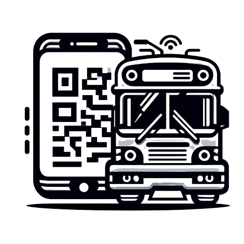

<ion-header class="ion-no-border">
  <ion-toolbar color="primary">
    <ion-buttons slot="start">
      <ion-menu-button></ion-menu-button>
    </ion-buttons>
    <ion-title>{{title}}</ion-title>
    <ion-title><div class="admin">Q R T R A N S P O R T</div></ion-title>
  </ion-toolbar>
</ion-header>

<ion-menu  contentId="main-content">
  <ion-header>
    <ion-toolbar>
      <ion-title></ion-title>
    </ion-toolbar>
  </ion-header>
  <ion-content>
    <ion-list>
      <ion-item *ngFor="let item of menuItem" [routerLink]="item.route">
        {{ item.title }}
      </ion-item>
      <ion-item  button (click)="signout()">
        Cerrar sesion
      </ion-item>
    </ion-list>
  </ion-content>
</ion-menu>
